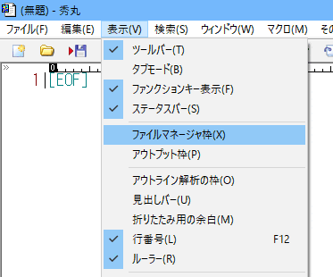
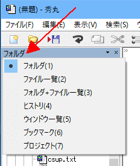
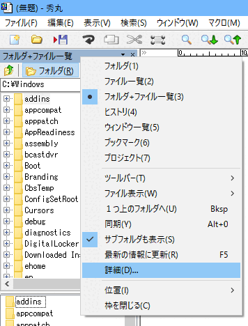
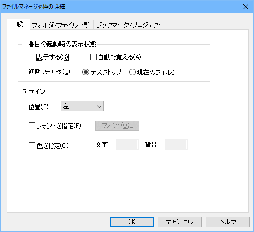
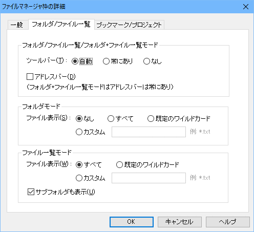
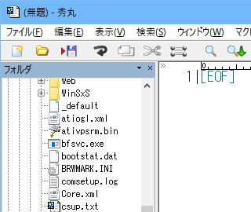
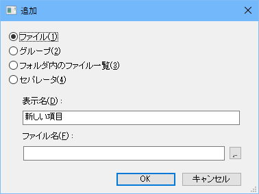
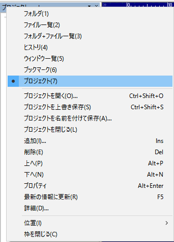
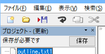
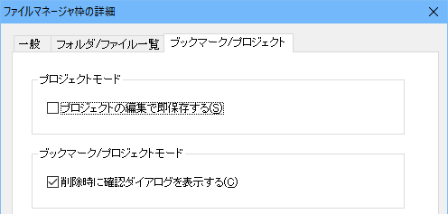

秀丸エディタ Ver.8.00以降ではファイルマネージャ枠が使用できます。
ファイルマネージャ枠は、名前の通りファイル/フォルダの一覧を表示するための枠です。
メニューの「表示」からファイルマネージャ枠の表示の切り替えが可能です。

ファイルマネージャ枠には以下の内容が表示可能です。
ツールバーの表示項目部分が「ボタン」になっていて、左クリックで切り替えメニューが表示されます。

ツールバーやファイルマネージャ枠内で右クリックするか、ツールバーの▼部分を左クリックすると各種設定込みの切り替えメニューが表示されます。 (切り替え以降のメニュー項目は、表示している内容によって切り替わります)

その名の通り、以下の内容を表示する枠です。
「フォルダの一覧」は、エクスプローラのフォルダツリー部分のみのと同じです。フォルダを選択する(ダブルクリック or Enterキー押下)と、「ファイル一覧」に切り替わります。
「ファイルの一覧」は、選択されたフォルダにあるファイルの一覧を表示します。設定により、「サブフォルダ」を表示する/しない を切り替える事が出来ます。ファイルを選択する(ダブルクリック or Enterキー押下)と、ファイルの種類に関係なく、秀丸エディタで開きます。その為、テキストファイルでないファイルも秀丸エディタで開きます。
注意
ヘルプに以下の記述があります。
「あくまで秀丸エディタ用の簡易的なものとして使っていただくためのものです。
本当のファイル操作などはWindowsエクスプローラでされることをお勧めします。」Windowsエクスプローラのようにフォルダ構成が変化したときの自動反映は実装されていません。変化があった場合、「最新の情報に更新」（枠内でF5キー）をしてもらう必要があります。
ファイルマネージャ枠の右クリックメニューにある「詳細」を選ぶと、ファイルマネージャ枠の設定画面が開きます。
「一般」はファイルマネージャ枠の表示に関する設定です。

「フォルダ/ファイル一覧」はフォルダ/ファイル一覧 表示に関する設定です。

フォルダモードの「ファイル表示」は、フォルダーツリーにフォルダだけではなく、ファイルを表示する為の設定になります。

「カスタム」で表示する拡張子を指定できます。「すべて」だと、ファイル数が多いと時間がかかる事もあります。
「既定のワイルドカード」の場合は、「その他」→「動作環境」→「ファイル」→「最初のワイルドカード」と同じになります。
ファイルモードの「ファイル表示」は、ファイル一覧の表示設定です。
「既定のワイルドカード」の場合は、「その他」→「動作環境」→「ファイル」→「最初のワイルドカード」と同じになります。
「カスタム」で表示する拡張子を指定できます。複数の拡張子を指定する場合は、
";" で区切って入力してください。
例)*.txt;*.html秀丸エディタ本体にあるファイルヒストリと同じです。メニューで表示するか枠内に常時表示するかの違いです。
右クリックメニューから選択したヒストリの削除が可能です。
秀丸エディタ本体にあるウィンドウ一覧と同じです。ウィンドウで表示するか枠内に常時表示するかの違いです。
右クリックメニューから選択したウィンドウを閉じる事が可能です。
秀丸エディタ本体にあるブックマークと同じです。メニューで表示するか枠内に常時表示するかの違いです。
右クリックメニューからブックマークの操作(追加/削除/上/下)が可能です。
「追加」を行うと以下の画面が表示されます。

「ファイル」はファイルを、「グループ」は分類用のフォルダを、「セパレータ」は区切り線を追加します。
「フォルダ内のファイル一覧」は、グループを作成し指定された拡張子のファイルを自動的に追加します。
ブックマークと同様、必要なファイルをまとめた一覧です。場合によって切り替えるブックマークみたいな物です。
右クリックメニューからプロジェクトの操作(開く/上書き/名前を付けて保存/追加/削除/上/下)が可能です。
「追加」を行うとブックマークと同じ画面が開きます。

ブックマークと違うのは、変更したときは「名前を付けて保存」する必要がある事と、複数のプロジェクトファイルを使い分ける事ができる事です。

設定でプロジェクトを編集した場合に直ぐに保存するようできますが、名前を付けていない場合(デフォルト状態)では無視されます。

「フォルダ/ファイル/フォルダ+ファイル一覧」は、現在編集中のファイルの場所とは、リンクしていません。その為、ファイル(タブやウィンドウ)を切り替えても自動的に場所が切り替わる事はありません。
現在編集のファイルがある場所を開きたい場合は、明示的に「同期」コマンドを実行する必要があります。
自動起動マクロに「アクティブ切り替え後」があるので、マクロから「同期」コマンドを実行するようにすれば自動的に同期させることが可能です。
ファイルマネージャ枠の同期を行うマクロの例です。
以下のマクロを「アクティブ切り替え後」に指定しておけば、ファイルを切り替時にファイルマネージャ枠も変更されます。
自動起動マクロに関しては、「第III部〜秀丸マクロのいろはにほへと 自動起動マクロ」を参照してください。
//DLLのロードを実行
#HmExplorer = loaddll("HmExplorerPane.dll");
//DLLのロードに失敗した場合は終了
if(#HmExplorer == 0) endmacro;
//枠のハンドルを取得
#fm = dllfunc(#HmExplorer, "GetWindowHandle", hidemaruhandle(0));
//枠があるか確認(枠がない場合、"GetWindowHandle" は ゼロを返す)
if(#fm > 0){
//表示モードを確認(6 フォルダ+ファイル一覧モード,0 フォルダモード,1 ファイル一覧モード)
#mode = dllfunc(#HmExplorer, "GetMode",hidemaruhandle(0));
//表示モードがファイル関連なら、同期コマンド呼び出し
if(#mode == 6 || #mode == 0 || #mode == 1){
//同期実行
#ret = sendmessage(#fm ,0x111/*WM_COMMAND*/, 252 ,0); //252=同期
}
}
freedll #HmExplorer;
endmacro;プロジェクトはファイルを一個ずつしか登録できません。「フォルダ内のファイル一覧」を使えば、拡張子を指定してまとめて追加できますが、不要なファイルまで含まれる場合もあります。
プロジェクトファイルの構造は簡単なので、登録するファイルが多い場合はフルパスのファイルリストを作り、そこから編集した方が早い場合もあります。
ファイル構造はブックマークと同じです。秀丸エディタヘルプ-ブックマークの整理の内容と、実際のプロジェクトファイルを開いてみてください。